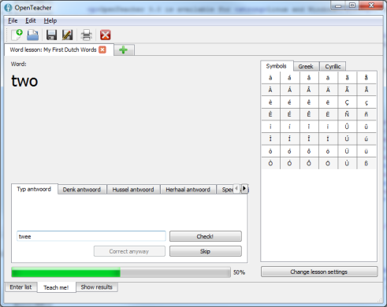

@!tr('OpenTeacher is an opensource application that helps you learn a variety of subjects.')!@
You just enter the questions and the answers, or download them from the internet, and OpenTeacher tests you.')
@!tr('OpenTeacher has the following features (among others):')!@
- @!tr('Viewing both recent and past results of tests with graphs')!@
- @!tr('Smart question asking and interval training')!@
- @!tr('Reverse rehearsal (the answer is asked, and you need to give the question)')!@
- @!tr('Read support for more than 29 file formats; write support for over 14 file formats')!@
- @!tr('Learn typing with our Typing Tutor which adapts itself to your skills')!@
- @!tr('Print your word lists, media items and topography maps')!@
- @!tr('(Partly) available in Arabic, Brazilian Portuguese, Simplified Chinese, Traditional Chinese, Czech, Dutch, Finnish, French, Frisian, Galician, German, Greek, Hungarian, Italian, Japanese, Polish, Russian, Sinhalese, Spanish and Turkish')!@
@!tr('OpenTeacher 3.2 is available for Linux, Windows and Mac OS X.')!@
@!tr('Download OpenTeacher 3.2')!@
@!tr('for')!@ Windows
@!tr('Other systems and distro-specific packages')!@